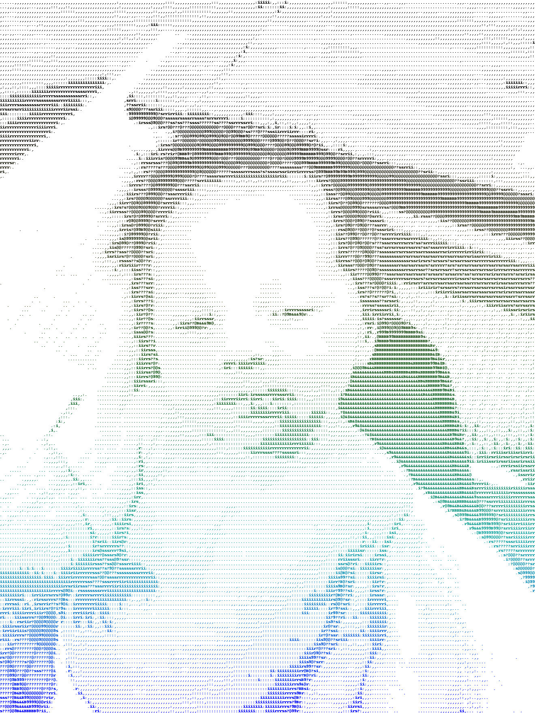

About Rebecca-Fi
My wife, Rebecca, is an amazing artist and teacher. I saw some of the lesson plans and work she put together for her students on the subject of iconography. I found it quite inspirational. As a result, I developed an application where users can upload photos and have them converted to ASCII art -- sort of a modern day interpretation of iconography.
The code for converting images to ASCII art works quite well. But as I write this, the graphical interface is just so-so. I aim to fix it over Christmas break when I have some down time from work. In the meantime, here are some neat screenshots of outputs from the application.
My son, Judson
